library(questionr)
data(rp2018)
rp <- filter(
rp2018,
departement %in% c("Oise", "Rhône", "Hauts-de-Seine", "Lozère", "Bouches-du-Rhône")
)6 Les graphiques
Pour produire un graphique, nous utiliserons l’extension ggplot2 qui est chargée avec le coeur de la librairie tidyverse. La grammaire graphique de ggplot2 peut être décrite de la façon suivante:
A statistical graphic is a
mappingofdatavariables toaesthetic attributes ofgeometric objects.
Plus spécifiquement, nous pouvons briser un graphique en trois composantes essentielles:
data: la base de données contenant les variables que nous désirons visualiser.geom: l’objet géométrique en question. Ceci réfère au type d’objet que nous pouvons observer dans notre graphique. Par exemple, des points, des lignes, des barres, etc.aes: les attributs esthétiques (aesthetics) de l’objet géométrique que nous affichons dans notre graphique. Par exemple, la position x/y, la couleur, la forme, la taille. Chaque attribut peut être associé à une variable dans notre base de données.
Une des particularités de ggplot2 est qu’elle part du principe que les données relatives à un graphique sont stockées dans un tableau de données (data frame, tibble ou autre).
Dans ce qui suit on utilisera le jeu de données issu du recensement de la population de 2018 inclus dans l’extension questionr (résultats partiels concernant les communes de plus de 2000 habitants de France métropolitaine). On charge ces données et on en extrait les données de 5 départements (l’utilisation de la fonction filter sera expliquée Section 2.2.2) :
6.1 Initialisation
Un graphique ggplot2 s’initialise à l’aide de la fonction ggplot(). Les données représentées graphiquement sont toujours issues d’un tableau de données (data frame ou tibble), qu’on passe en argument data à la fonction :
ggplot(data = rp)
## Ou, équivalent
ggplot(rp)On a défini la source de données, il faut maintenant ajouter des éléments de représentation graphique. Ces éléments sont appelés des geom, et on les ajoute à l’objet graphique de base avec l’opérateur +.
Un des geom les plus simples est geom_histogram. On peut l’ajouter de la manière suivante :
ggplot(rp) +
geom_histogram()Reste à indiquer quelle donnée nous voulons représenter sous forme d’histogramme. Cela se fait à l’aide d’arguments passés via la fonction aes(). Ici nous avons un paramètre à renseigner, x, qui indique la variable à représenter sur l’axe des x (l’axe horizontal). Ainsi, si on souhaite représenter la distribution des communes du jeu de données selon le pourcentage de cadres dans leur population active (variable cadres), on pourra faire :
ggplot(rp) +
geom_histogram(aes(x = cadres))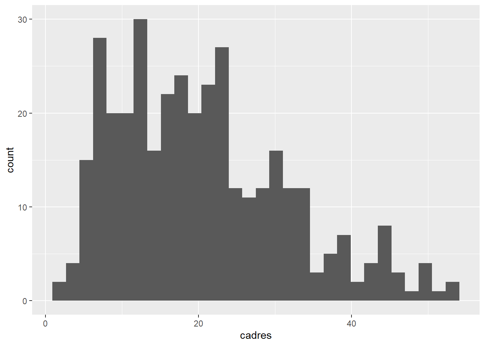
Si on veut représenter une autre variable, il suffit de changer la valeur de x :
ggplot(rp) +
geom_histogram(aes(x = ouvr))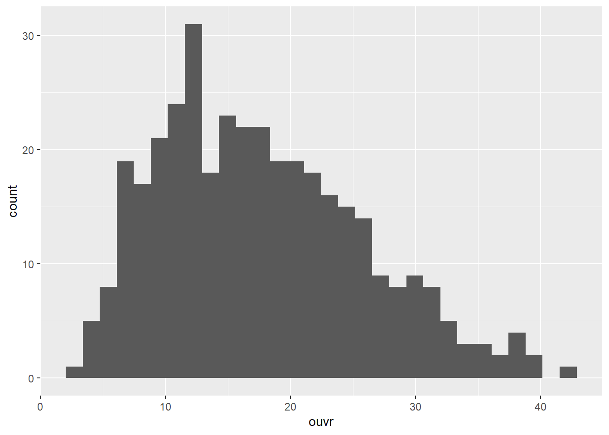
Note
Quand on spécifie une variable, inutile d’indiquer le nom du tableau de données sous la forme rp$ouvr, car ggplot2 recherche automatiquement la variable dans le tableau de données indiqué avec le paramètre data. On peut donc se contenter de ouvr.
Certains geom prennent plusieurs paramètres. Ainsi, si on veut représenter un nuage de points, on peut le faire en ajoutant un geom_point. On doit alors indiquer à la fois la position en x (la variable sur l’axe horizontal) et en y (la variable sur l’axe vertical) de ces points, il faut donc passer ces deux arguments à aes() :
ggplot(rp) +
geom_point(aes(x = dipl_sup, y = cadres))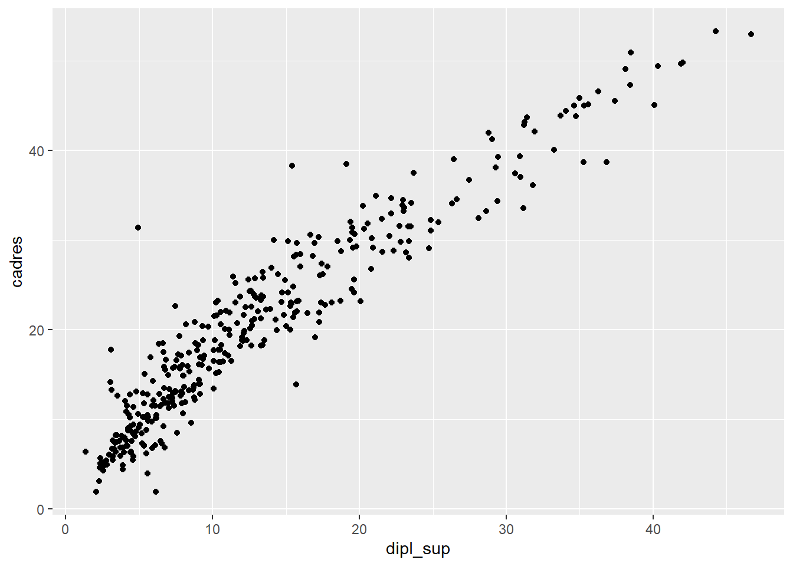
On peut modifier certains attributs graphiques d’un geom en lui passant des arguments supplémentaires. Par exemple, pour un nuage de points, on peut modifier la couleur des points avec l’argument color, leur taille avec l’argument size, et leur transparence avec l’argument alpha :
ggplot(rp) +
geom_point(
aes(x = dipl_sup, y = cadres),
color = "darkgreen", size = 3, alpha = 0.3
)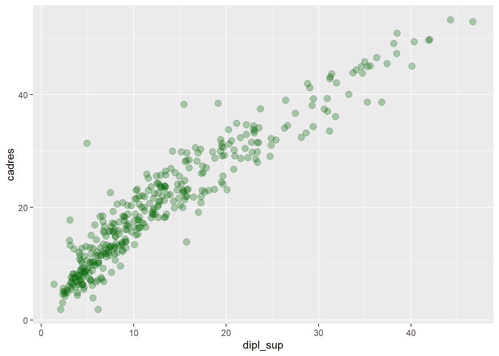
On notera que dans ce cas les arguments sont dans la fonction geom mais à l’extérieur du aes(). Plus d’explications sur ce point dans quelques instants.
6.2 Les titres
Pour ajouter un titre à votre graphique et pour ajouter des titres à vos axes x et y, nous utilisons la commande labs().
ggplot(rp) +
geom_point(
aes(x = dipl_sup, y = cadres)
) +
labs(
title = "Un titre magnifique",
x = "Le nombre d'années de scolarité",
y = "Le pourcentage de cadres dans la population acitve"
)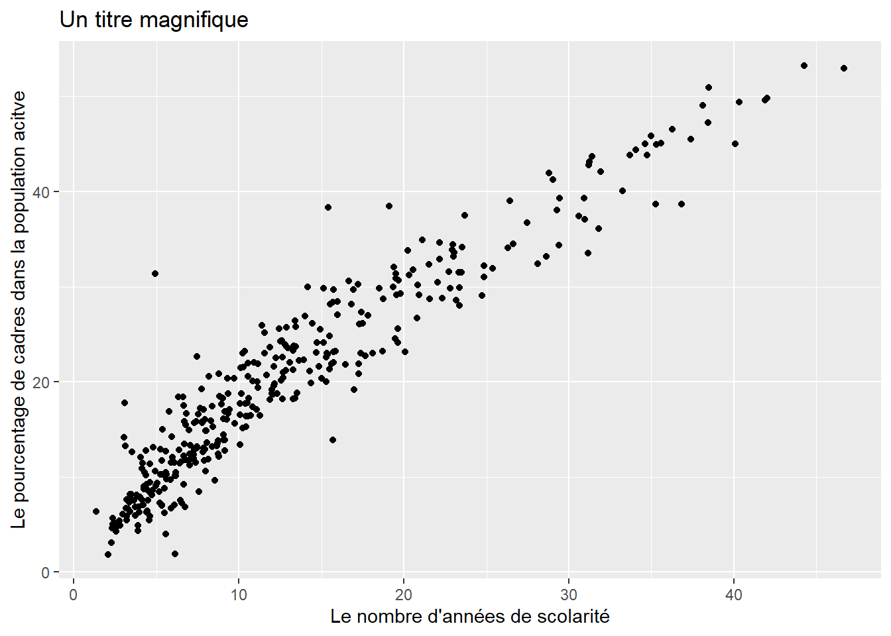
6.3 Exemples de geom
Il existe un grand nombre de geom, décrits en détail dans la documentation officielle. Outre les geom_histogram et geom_point que l’on vient de voir, on pourra noter les geom suivants.
6.3.1 geom_boxplot
geom_boxplot permet de représenter des boîtes à moustaches. On lui passe en y la variable numérique dont on veut étudier la répartition, et en x la variable qualitative contenant les classes qu’on souhaite comparer. Ainsi, si on veut comparer la répartition du pourcentage de maisons en fonction du département de la commune, on pourra faire :
ggplot(rp) +
geom_boxplot(aes(x = departement, y = maison))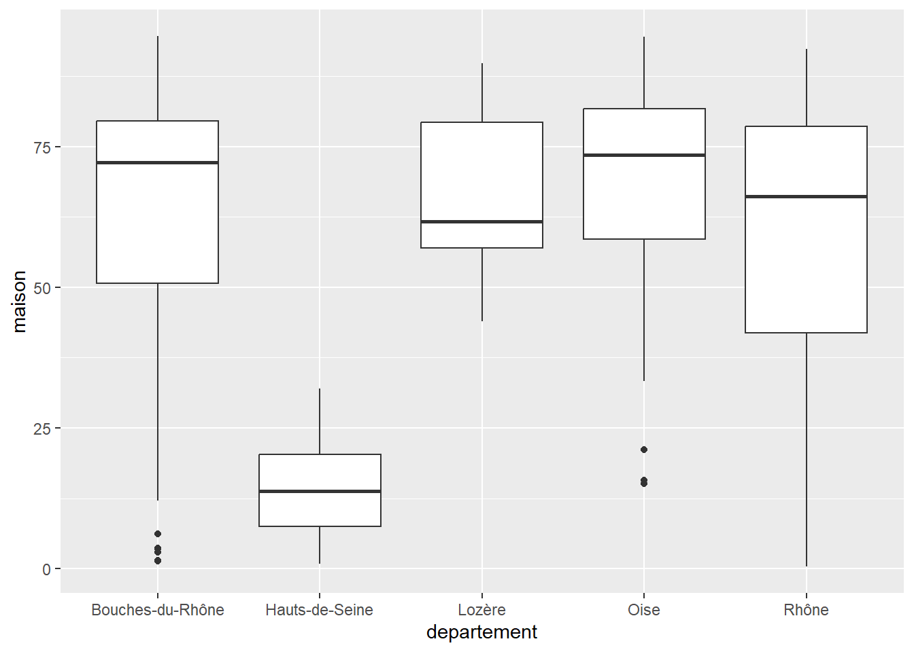
On peut personnaliser la présentation avec différents argument supplémentaires comme fill ou color :
ggplot(rp) +
geom_boxplot(
aes(x = departement, y = maison),
fill = "wheat", color = "tomato4"
)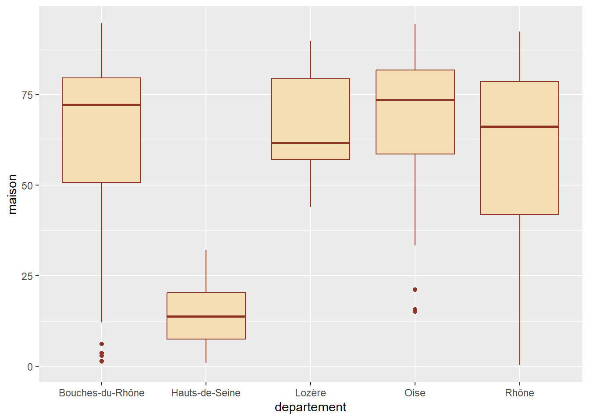
Un autre argument utile, varwidth, permet de faire varier la largeur des boîtes en fonction des effectifs de la classe (donc, ici, en fonction du nombre de communes de chaque département) :
ggplot(rp) +
geom_boxplot(
aes(x = departement, y = maison),
varwidth = TRUE)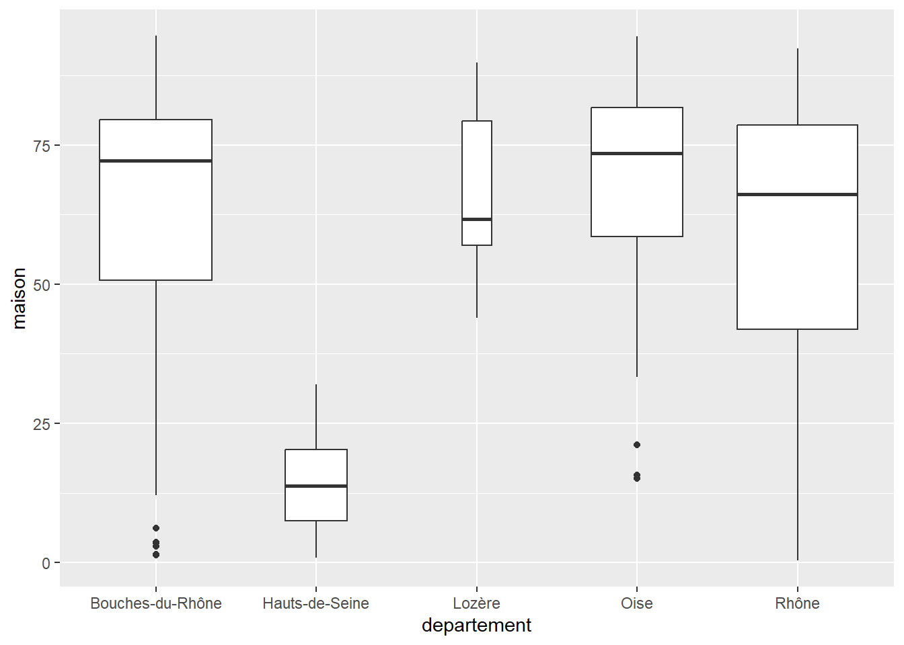
6.3.2 geom_violin
geom_violin est très semblable à geom_boxplot, mais utilise des graphes en violon à la place des boîtes à moustache.
ggplot(rp) +
geom_violin(aes(x = departement, y = maison))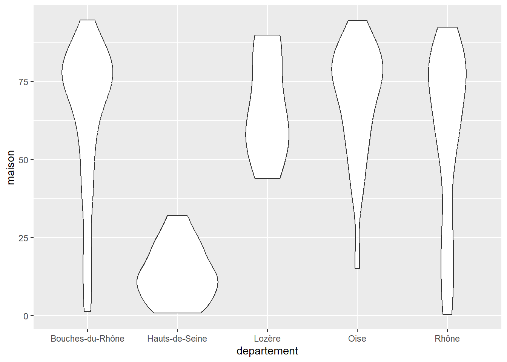
Les graphes en violon peuvent donner une lecture plus fine des différences de distribution selon les classes. Comme pour les graphiques de densité, on peut faire varier le niveau de “détail” de la représentation en utilisant l’argument bw (bande passante).
ggplot(rp) +
geom_violin(
aes(x = departement, y = maison),
bw = 2
)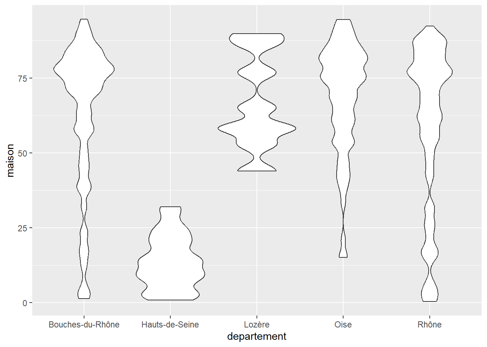
6.3.3 geom_bar et geom_col
geom_bar permet de produire un graphique en bâtons (barplot). On lui passe en x la variable qualitative dont on souhaite représenter l’effectif de chaque modalité.
Par exemple, si on veut afficher le nombre de communes de notre jeu de données pour chaque département :
ggplot(rp) +
geom_bar(aes(x = departement))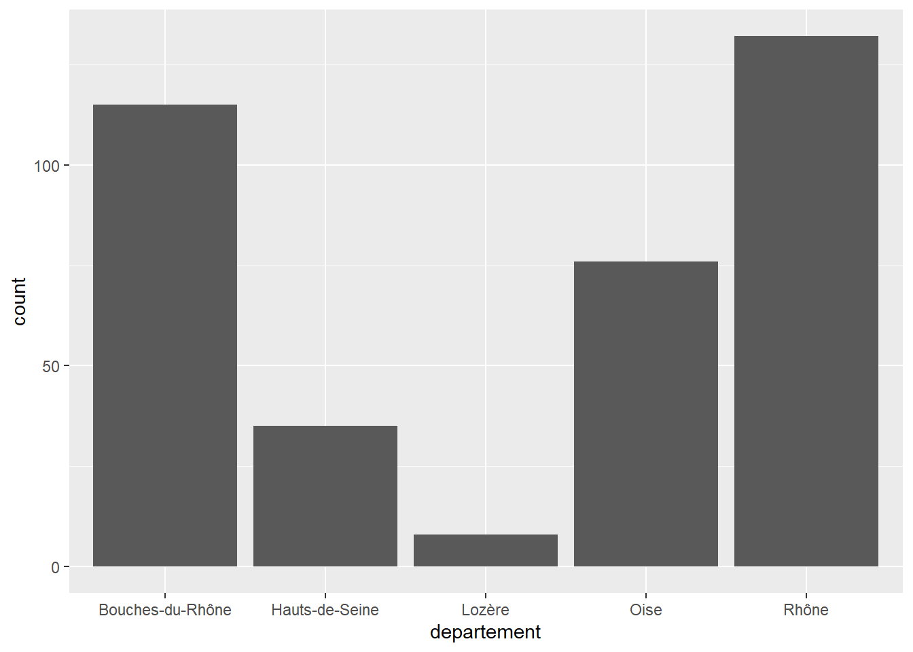
Si on préfère avoir un graphique en barres horizontales, il suffit de passer la variable comme attribut y plutôt que x.
ggplot(rp) +
geom_bar(aes(y = departement))
Une autre possibilité est d’utiliser coord_flip(), qui permet d’intervertir l’axe horizontal et l’axe vertical.
ggplot(rp) +
geom_bar(aes(x = departement)) +
coord_flip()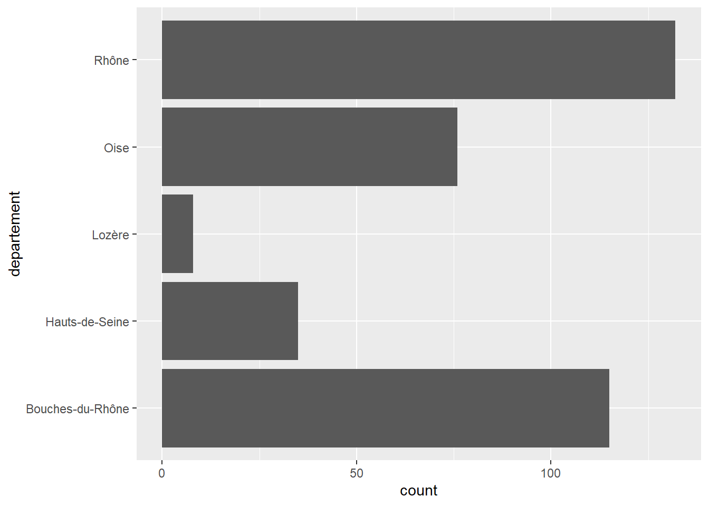
À noter que coord_flip() peut s’appliquer à n’importe quel graphique ggplot2.
6.3.4 geom_histogram
geom_histogram permet de représenter des histogrammes. On lui passe en x la variable quantitative dont on souhiate étudier la répartition.
ggplot(rp) +
geom_histogram(aes(x = cadres))
#> `stat_bin()` using `bins = 30`. Pick better value with `binwidth`.
On peut utiliser différents arguments, comme par exemple binwidth pour spécifier la largeur des rectangles de notre histogramme.
ggplot(rp) +
geom_histogram(aes(x = cadres), binwidth = 5)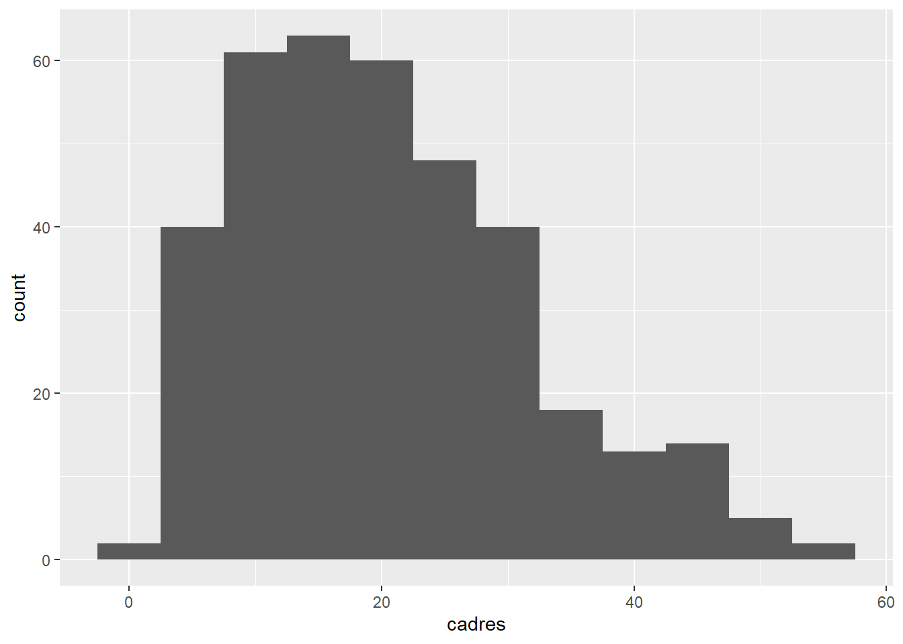
6.3.5 geom_freqpoly
geom_freqpoly permet d’afficher le polygone de fréquences d’une variable numérique. Son usage est similaire à celui de geom_histogram.
Ainsi, si on veut afficher le polygone de fréquences de la part des cadres dans les communes de notre jeu de données :
ggplot(rp) +
geom_freqpoly(aes(x = cadres))
#> `stat_bin()` using `bins = 30`. Pick better value with `binwidth`.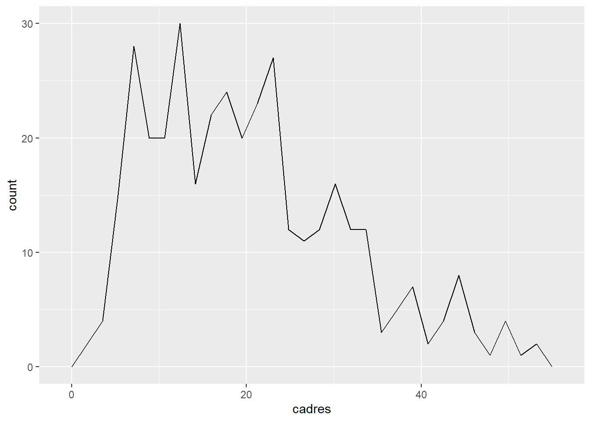
On peut utiliser différents arguments pour ajuster le calcul de l’estimation de densité, parmi lesquels kernel et bw (voir la page d’aide de la fonction density pour plus de détails). bw (abbréviation de bandwidth, bande passante) permet de régler la “finesse” de l’estimation de densité, un peu comme le choix du nombre de classes dans un histogramme :
ggplot(rp) +
geom_freqpoly(aes(x = cadres), binwidth = 5)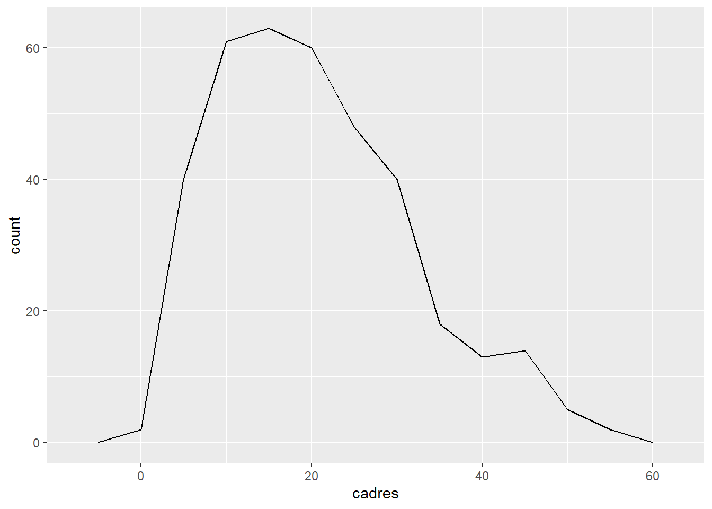
6.3.6 geom_line
geom_line trace des lignes connectant les différentes observations entre elles. Il est notamment utilisé pour la représentation de séries temporelles. On passe à geom_line deux paramètres : x et y. Les observations sont alors connectées selon l’ordre des valeurs passées en x.
Comme il n’y a pas de données adaptées pour ce type de représentation dans notre jeu de données d’exemple, on va utiliser ici le jeu de données economics inclus dans ggplot2 et représenter l’évolution du taux de chômage aux États-Unis (variable unemploy) dans le temps (variable date) :
data("economics")
economics
#> # A tibble: 574 × 6
#> date pce pop psavert uempmed unemploy
#> <date> <dbl> <dbl> <dbl> <dbl> <dbl>
#> 1 1967-07-01 507. 198712 12.6 4.5 2944
#> 2 1967-08-01 510. 198911 12.6 4.7 2945
#> 3 1967-09-01 516. 199113 11.9 4.6 2958
#> 4 1967-10-01 512. 199311 12.9 4.9 3143
#> 5 1967-11-01 517. 199498 12.8 4.7 3066
#> 6 1967-12-01 525. 199657 11.8 4.8 3018
#> 7 1968-01-01 531. 199808 11.7 5.1 2878
#> 8 1968-02-01 534. 199920 12.3 4.5 3001
#> 9 1968-03-01 544. 200056 11.7 4.1 2877
#> 10 1968-04-01 544 200208 12.3 4.6 2709
#> # ℹ 564 more rowsggplot(economics) +
geom_line(aes(x = date, y = unemploy))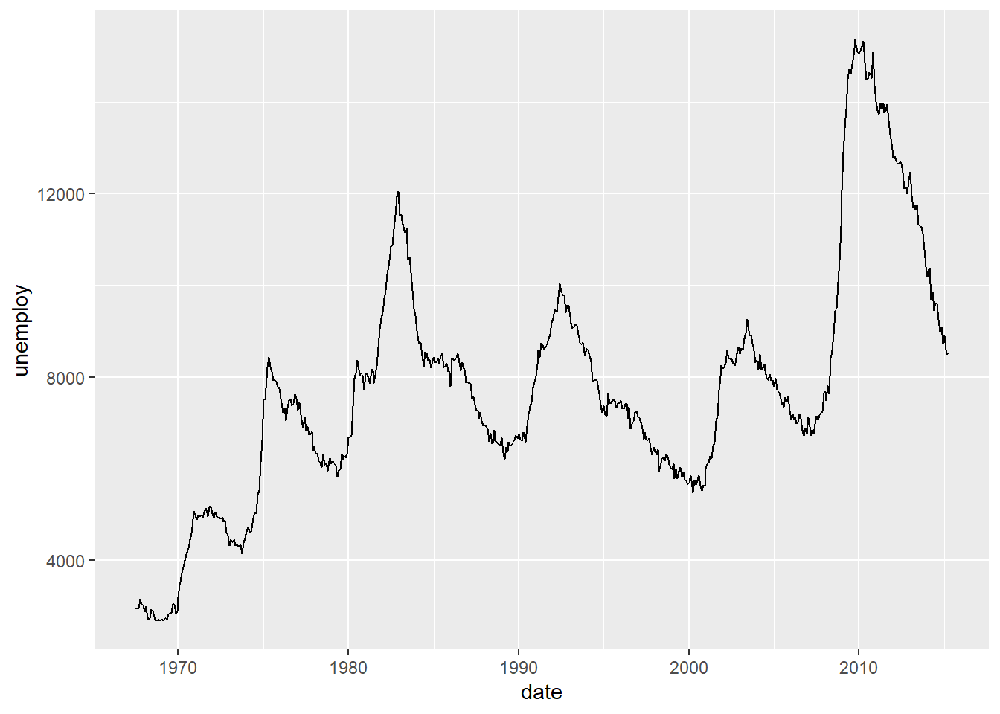
6.4 Mappages
Un mappage, dans ggplot2, est une mise en relation entre un attribut graphique du geom (position, couleur, taille…) et une variable du tableau de données.
Ces mappages sont passés aux différents geom via la fonction aes() (abbréviation d’aesthetic).
6.4.1 Exemples de mappages
On a déjà vu les mappages x et y pour un nuage de points. Ceux-ci signifient que la position d’un point donné horizontalement (x) et verticalement (y) dépend de la valeur des variables passées comme arguments x et y dans aes().
ggplot(rp) +
geom_point(
aes(x = dipl_sup, y = cadres)
)
Mais on peut ajouter d’autres mappages. Par exemple, color permet de faire varier la couleur des points automatiquement en fonction des valeurs d’une troisième variable. Ainsi, on peut vouloir colorer les points selon le département de la commune correspondante.
ggplot(rp) +
geom_point(
aes(x = dipl_sup, y = cadres, color = departement)
)
On peut aussi faire varier la taille des points avec size. Ici, la taille dépend de la population totale de la commune :
ggplot(rp) +
geom_point(
aes(x = dipl_sup, y = cadres, color = departement, size = pop_tot)
)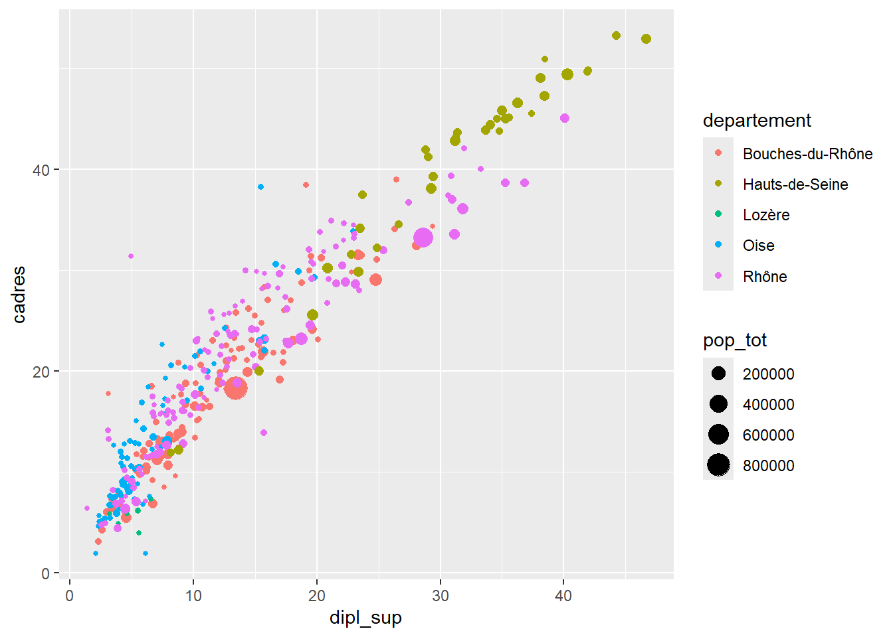
On peut même associer la transparence des points à une variable avec alpha :
ggplot(rp) +
geom_point(
aes(x = dipl_sup, y = cadres, color = departement, size = pop_tot, alpha = maison)
)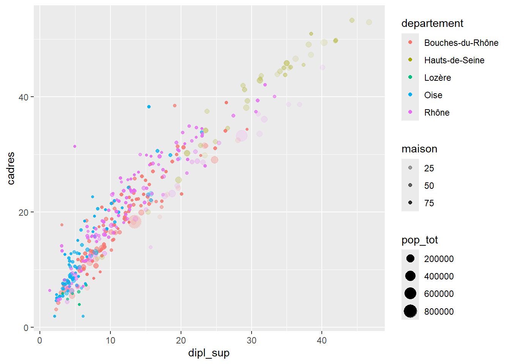
Chaque geom possède sa propre liste de mappages.
6.4.2 aes() or not aes() ?
Comme on l’a déjà vu, parfois on souhaite changer un attribut sans le relier à une variable : c’est le cas par exemple si on veut représenter tous les points en rouge. Dans ce cas on utilise toujours l’attribut color, mais comme il ne s’agit pas d’un mappage, on le définit à l’extérieur de la fonction aes().
ggplot(rp) +
geom_point(
aes(x = dipl_sup, y = cadres),
color = "red"
)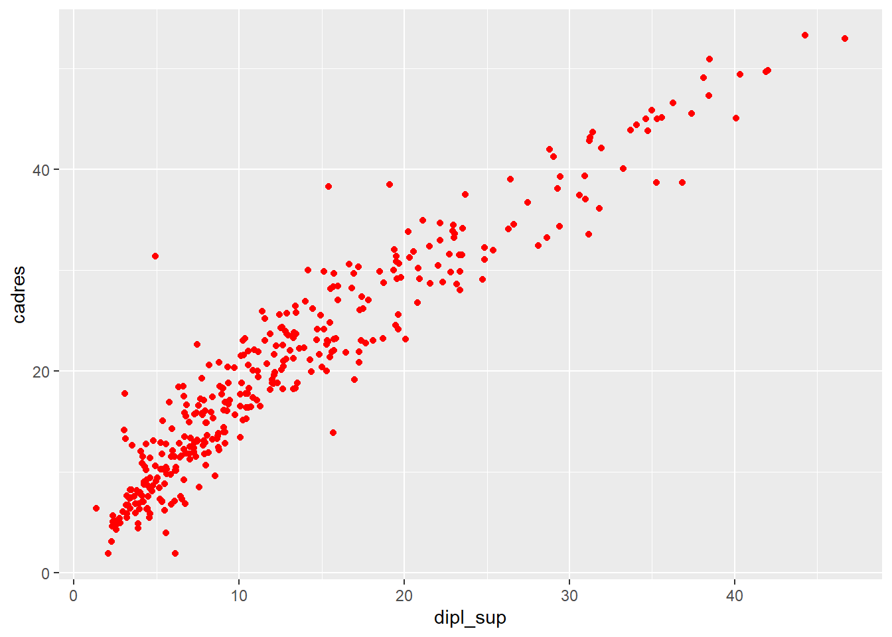
Par contre, si on veut faire varier la couleur en fonction des valeurs prises par une variable, on réalise un mappage, et on doit donc placer l’attribut color à l’intérieur de aes().
ggplot(rp) +
geom_point(
aes(x = dipl_sup, y = cadres, color = departement)
)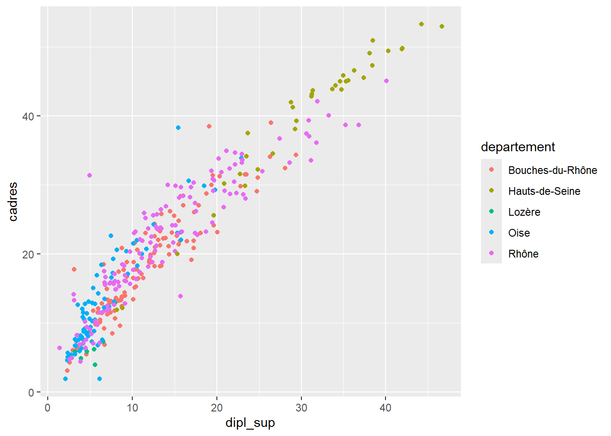
On peut mélanger attributs liés à une variable (mappage, donc dans aes()) et attributs constants (donc à l’extérieur). Dans l’exemple suivant, la taille varie en fonction de la variable pop_tot, mais la couleur est constante pour tous les points.
ggplot(rp) +
geom_point(
aes(x = dipl_sup, y = cadres, size = pop_tot),
color = "royalblue"
)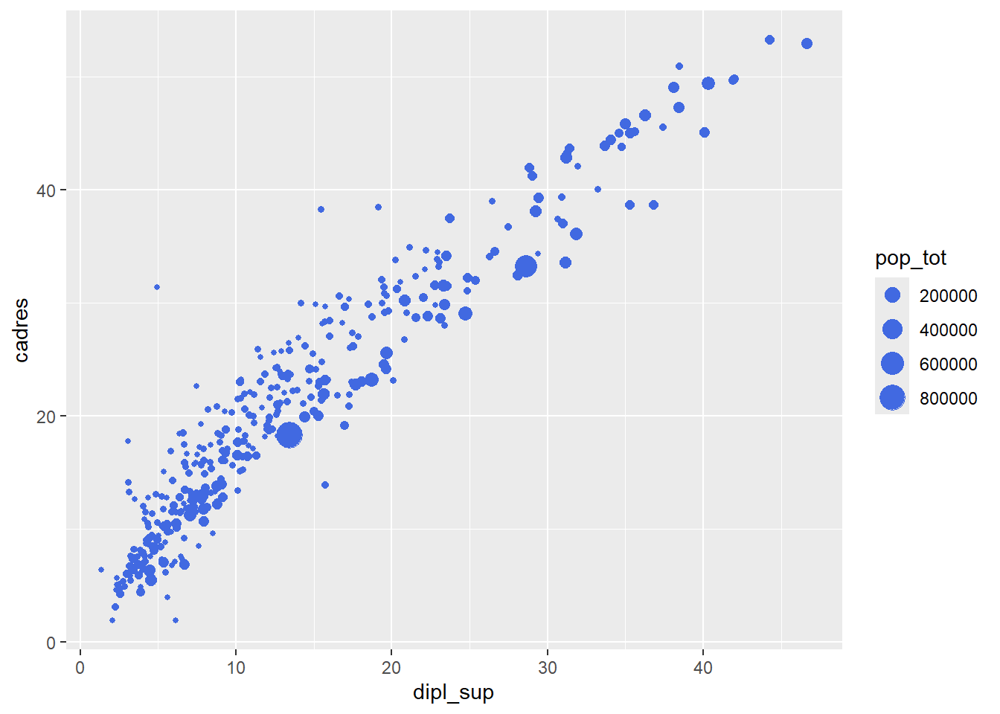
Avertissement
La règle est donc simple mais très importante :
Si on établit un lien entre les valeurs d’une variable et un attribut graphique, on définit un mappage, et on le déclare dans aes(). Sinon, on modifie l’attribut de la même manière pour tous les points, et on le définit en-dehors de la fonction aes().
6.4.3 geom_bar et position
Un des mappages possibles de geom_bar est l’attribut fill, qui permet de tracer des barres de couleur différentes selon les modalités d’une deuxième variable :
ggplot(rp) +
geom_bar(aes(x = departement, fill = pop_cl))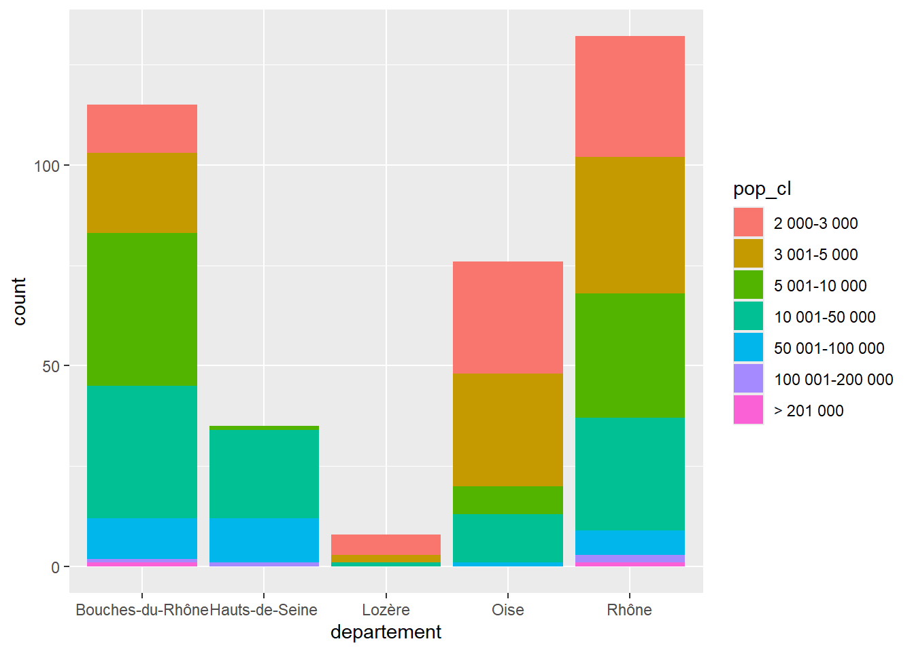
L’attribut position de geom_bar permet d’indiquer comment les différentes barres doivent être positionnées. Par défaut l’argument vaut position = "stack" et elles sont donc “empilées”. Mais on peut préciser position = "dodge" pour les mettre côte à côte.
ggplot(rp) +
geom_bar(
aes(x = departement, fill = pop_cl),
position = "dodge"
)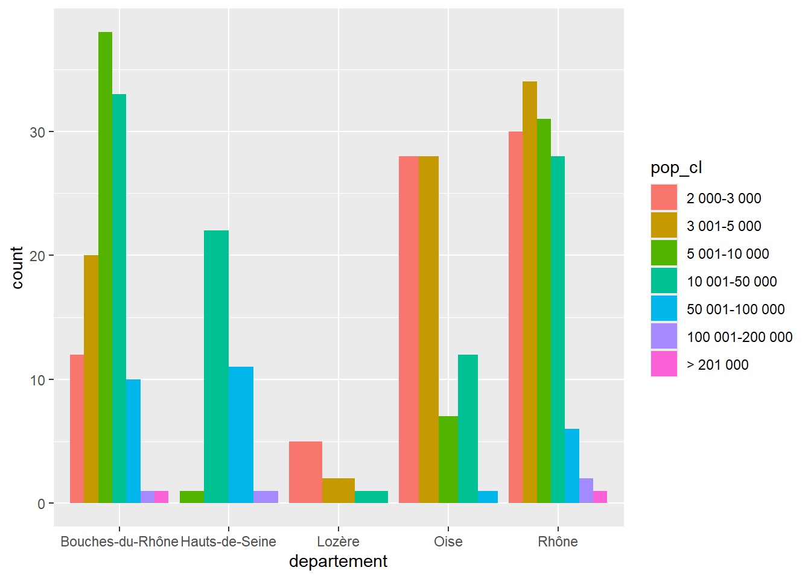
Ou encore position = "fill" pour représenter non plus des effectifs, mais des proportions.
ggplot(rp) +
geom_bar(
aes(x = departement, fill = pop_cl),
position = "fill"
)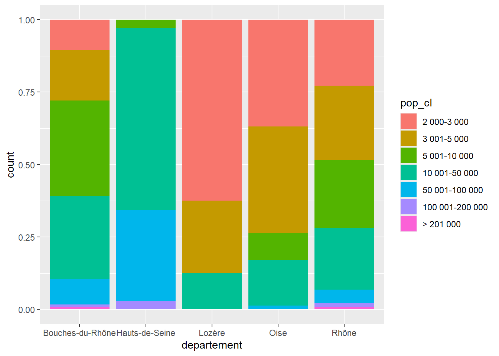
Là encore, on peut utiliser coord_flip() si on souhaite une visualisation avec des barres horizontales.
ggplot(rp) +
geom_bar(
aes(x = departement, fill = pop_cl),
position = "fill"
) +
coord_flip()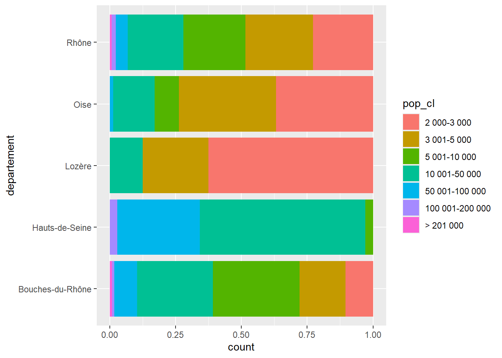
6.5 Représentation de plusieurs geom
On peut représenter plusieurs geom simultanément sur un même graphique, il suffit de les ajouter à tour de rôle avec l’opérateur +.
Par exemple, on peut superposer la position des points au-dessus d’un boxplot. On va pour cela ajouter un geom_point après avoir ajouté notre geom_boxplot.
ggplot(rp) +
geom_boxplot(aes(x = departement, y = maison)) +
geom_point(
aes(x = departement, y = maison),
col = "red", alpha = 0.2
)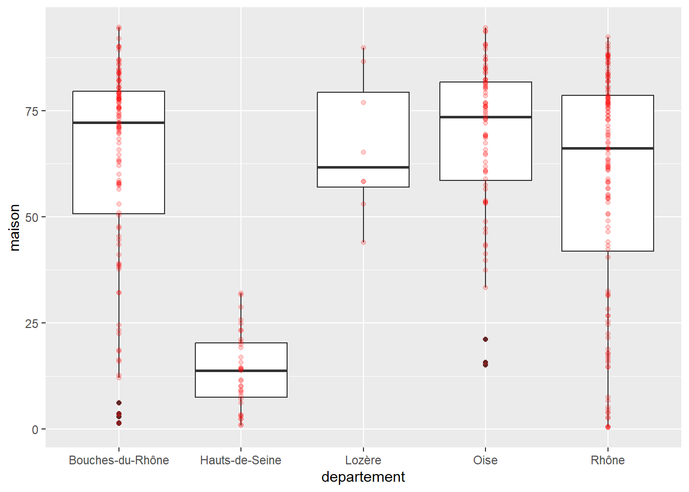
Note
Quand une commande ggplot2 devient longue, il peut être plus lisible de la répartir sur plusieurs lignes. Dans ce cas, il faut penser à placer l’opérateur + en fin de ligne, afin que R comprenne que la commande n’est pas complète et qu’il prenne en compte la suite.
Pour un résultat un peu plus lisible, on peut remplacer geom_point par geom_jitter, qui disperse les points horizontalement et facilite leur visualisation.
ggplot(rp) +
geom_boxplot(aes(x = departement, y = maison)) +
geom_jitter(
aes(x = departement, y = maison),
col = "red", alpha = 0.2
)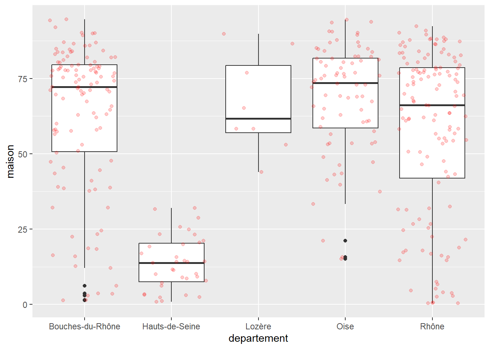
Pour simplifier un peu le code, plutôt que de déclarer les mappages dans chaque geom, on peut les déclarer dans l’appel à ggplot(). Ils seront automatiquement “hérités” par les geom ajoutés (sauf s’ils redéfinissent les mêmes mappages).
ggplot(rp, aes(x = departement, y = maison)) +
geom_boxplot() +
geom_jitter(color = "red", alpha = 0.2)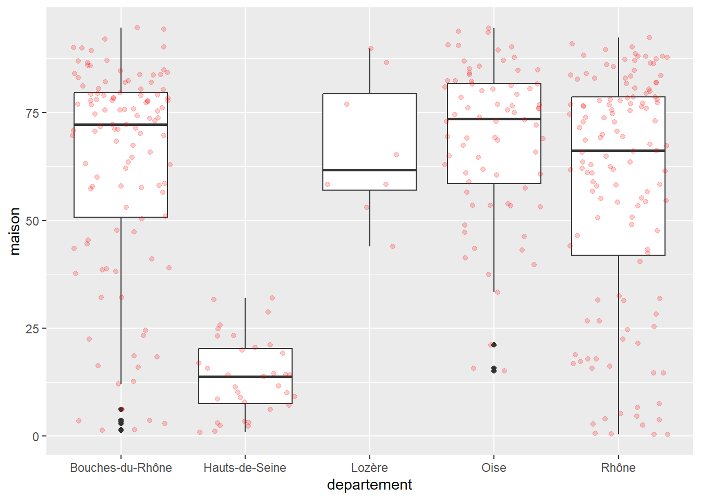
Autre exemple, on peut vouloir ajouter à un nuage de points une ligne de régression linéaire à l’aide de geom_smooth :
ggplot(rp, aes(x = dipl_sup, y = cadres)) +
geom_point(alpha = 0.2) +
geom_smooth(method = "lm")
#> `geom_smooth()` using formula = 'y ~ x'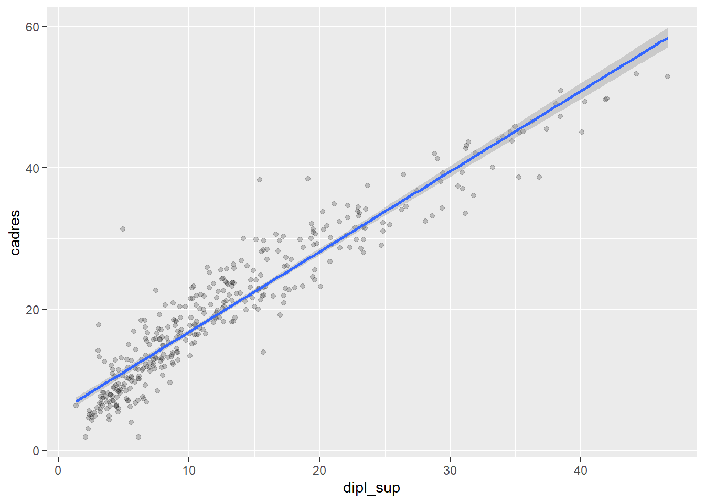
Et on peut même superposer une troisième visualisation de la répartition des points dans l’espace avec geom_density2d :
ggplot(rp, aes(x = dipl_sup, y = cadres)) +
geom_point(alpha = 0.2) +
geom_density2d(color = "red") +
geom_smooth(method = "lm")
#> `geom_smooth()` using formula = 'y ~ x'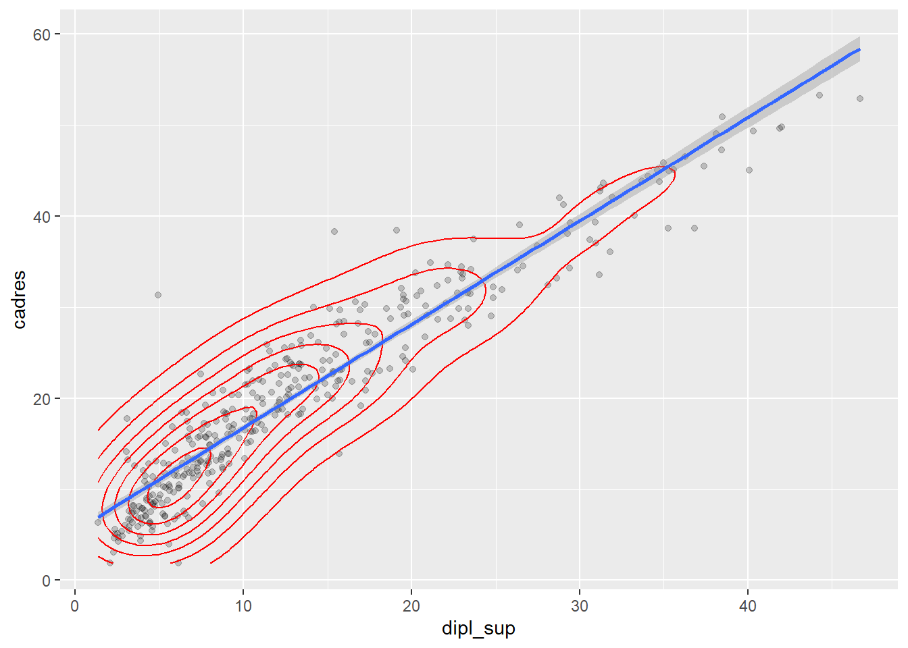
On peut enfin superposer l’histogramme ainsi que le polygone de fréquences.
ggplot(rp) +
geom_histogram(aes(x = cadres), binwidth = 5) +
geom_freqpoly(aes(x = cadres), binwidth = 5)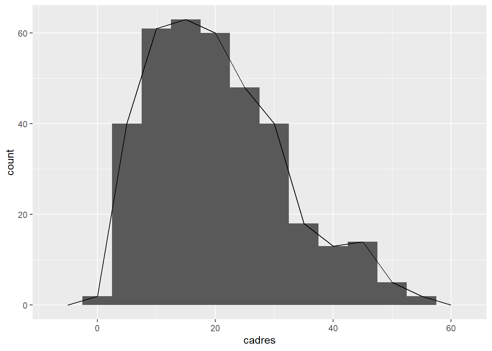
6.6 Faceting
Le faceting permet d’effectuer plusieurs fois le même graphique selon les valeurs d’une ou plusieurs variables qualitatives.
Par exemple, on a vu qu’on peut représenter l’histogramme du pourcentage de cadres dans nos communes avec le code suivant :
ggplot(data = rp) +
geom_histogram(aes(x = cadres))On souhaite comparer cette distribution de la part des cadres selon le département, et donc faire un histogramme pour chacun de ces départements. C’est ce que permettent les fonctions facet_wrap et facet_grid.
facet_wrap prend un paramètre de la forme vars(variable), où variable est le nom de la variable en fonction de laquelle on souhaite faire les différents graphiques. Ceux-ci sont alors affichés les uns à côté des autres et répartis automatiquement dans la page.
ggplot(data = rp) +
geom_histogram(aes(x = cadres)) +
facet_wrap(vars(departement))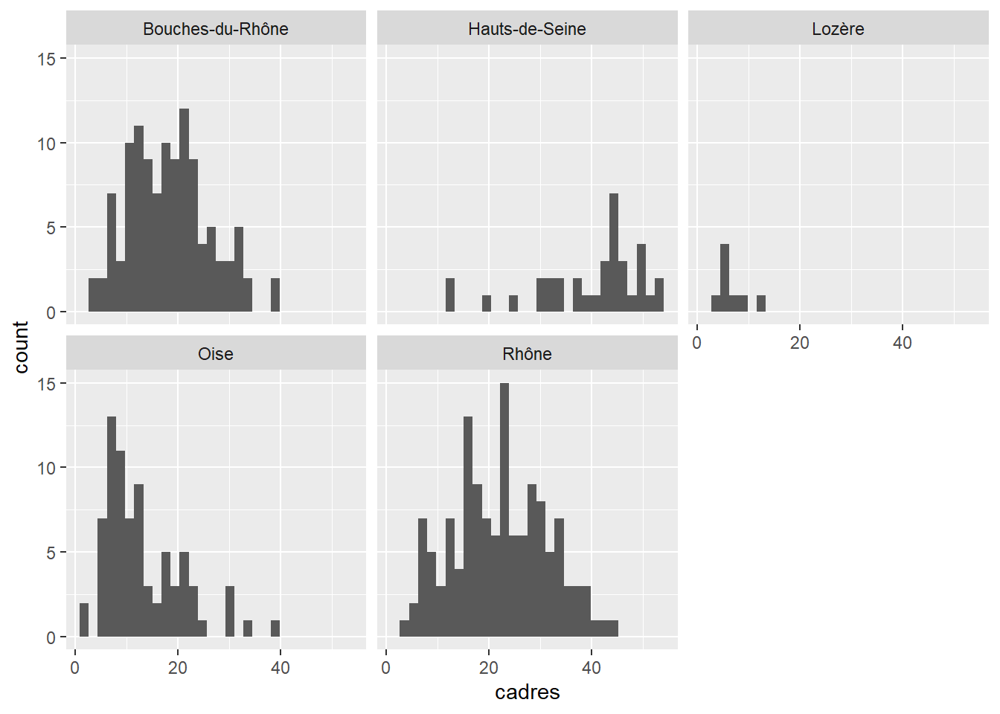
Pour facet_grid, les graphiques sont disposés selon une grille. La fonction prend alors deux arguments, rows et cols, auxquels on passe les variables à afficher en ligne ou en colonne via la fonction vars().
ggplot(data = rp) +
geom_histogram(aes(x = cadres)) +
facet_grid(rows = vars(departement))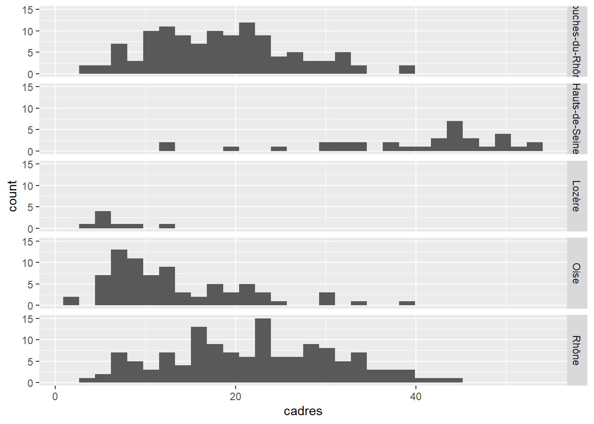
Un des intérêts du faceting dans ggplot2 est que tous les graphiques générés ont les mêmes échelles, ce qui permet une comparaison directe.
Enfin, notons qu’on peut même faire du faceting sur plusieurs variables à la fois. On peut par exemple faire des histogrammes de la répartition de la part des cadres pour chaque croisement des variables departement et pop_cl :
ggplot(data = rp) +
geom_histogram(aes(x = cadres)) +
facet_grid(
rows = vars(departement), cols = vars(pop_cl)
)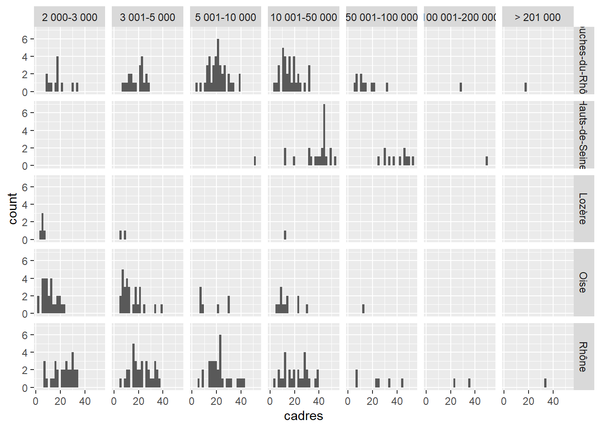
L’histogramme en haut à gauche représente la répartition du pourcentage de cadres parmi les communes de 2000 à 3000 habitants dans les Bouches-du-Rhône, etc.
6.7 Ressources
La documentation officielle (en anglais) de ggplot2 est très complète et accessible en ligne.
Une “antisèche” (en anglais) résumant en deux pages l’ensemble des fonctions et arguments et disponible soit directement depuis RStudio (menu Help > Cheatsheets > Data visualization with ggplot2) ou en ligne.
Les parties Data visualisation et Graphics for communication de l’ouvrage en ligne R for data science, de Hadley Wickham, sont une très bonne introduction à ggplot2.
Plusieurs ouvrages, toujours en anglais, abordent en détail l’utilisation de ggplot2, en particulier ggplot2: Elegant Graphics for Data Analysis, toujours de Hadley Wickham, et le R Graphics Cookbook de Winston Chang.
Le site associé à ce dernier ouvrage comporte aussi pas mal d’exemples et d’informations intéressantes.
Enfin, si ggplot2 présente déjà un très grand nombre de fonctionnalités, il existe aussi un système d’extensions permettant d’ajouter des geom, des thèmes, etc. Le site ggplot2 extensions est une très bonne ressource pour les parcourir et les découvrir, notamment grâce à sa galerie.